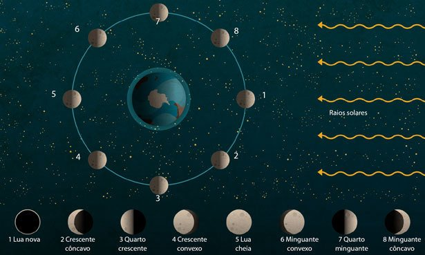

Clique para minimizar
Como a lua se movimenta?
Clique para ampliar
Não sendo uma estrela, a Lua não emite luz própria. Entretanto, a vemos iluminada pois ela reflete a luz proveniente do Sol.
A Lua apresenta três movimentos principais:
- Rotação: em torno do seu próprio eixo
- Revolução: ao redor da Terra
- Translação: ao redor do Sol, junto com a Terra.
Desta forma, assume diferentes posições em relação a Terra e ao Sol. Isso faz com que sua parte iluminada seja vista de diferentes formas ao longo de um ciclo lunar
As fases da lua
As fases da Lua representam os diferentes aspectos que vemos o satélite natural da Terra ao longo de um ciclo. Isso acontece em virtude da variação da sua posição em relação ao nosso planeta e ao Sol.
- Lua Nova nesta fase, não conseguimos observar a Lua pois ela está posicionada entre o Sol e a Terra e, por isso, não a vemos neste momento. Nesta fase, a Lua está no céu durante o dia, nascendo por volta das 6 horas e se pondo por volta das 18 horas.
- Lua Crescente ou quarto crescente recebe esta denominação pois neste momento só conseguimos observar ¼ de sua totalidade. Seu formato é de um semicírculo e, nesta fase, a Lua nasce aproximadamente ao meio-dia e se põe aproximadamente à meia-noite.
- Lua Cheia nesta fase, a Terra está entre o Sol e a Lua e, portanto, conseguimos observar a totalidade do satélite iluminado integralmente pelo Sol. Nesta fase, a Lua nasce aproximadamente às 18 horas e se põe aproximadamente às 6 horas do dia seguinte.
- Lua Minguante ou quarto minguante é o último estágio das fases da Lua. Neste período, ela encontra-se no formato de um semicírculo e assim, novamente conseguimos observar ¼ de sua totalidade no sentido oposto da fase crescente. Nesta fase, a Lua nasce aproximadamente à meia-noite e se põe aproximadamente ao meio-dia